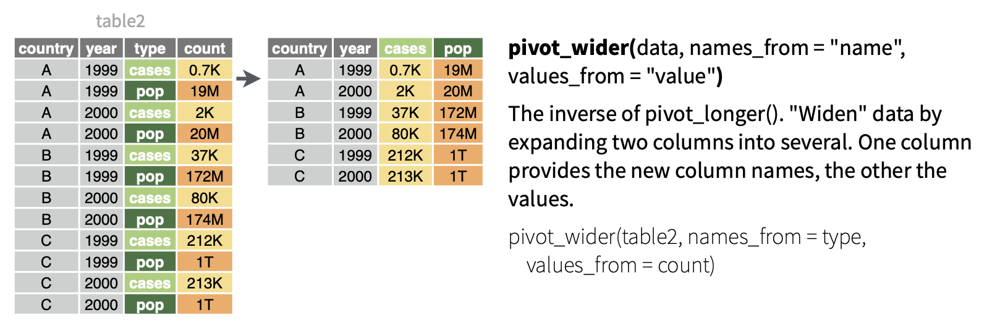

22 Wrangling
Exam 2 Summary
Exam one covered wrangling, dates, reshaping, joining, factors, strings, data import, and EDA.
Wrangling Content
Goals of Data Wrangling:
Get data into a tidy shape for analysis, such as keeping only certain observations or variables, make new variables, reformat existing variables, combine datasets, or process text
Numerically explore and summarize data
Tools of Data Wrangling:
arrange - arrange rows according to some column
elections_small |> arrange(repub_pct_20)
elections_small |> arrange(desc(repub_pct_20))
filter – filter out or obtain a subset of the rows
filter(elections, state_name == “Minnesota”)
elections |> filter(state_name == “Minnesota”)
select - select a subset of columns
elections |> select(state_name, county_name, dem_pct_20, dem_pct_16)
select(elections, c(state_name, country_name, dem_pct_20, dem_pct_16))
if you add a - it will exclude it from the search!
- select(-variable)
Can include ends_with, starts_with, and contains- see examples!
mutate - mutate or create a column
- elections_small |> mutate(diff_20 = repub_pct_20 - dem_pct_20)
summarize - calculate a numerical summary of a column
- elections_small |> summarize(median(repub_pct_20))
group_by - group the rows by a specified column
- elections_small |> group_by(state_name)
Examples
SELECT elections_small <- elections |> select(state_name, county_name, total_votes_20, repub_pct_20, dem_pct_20, total_votes_16, dem_pct_16) head(elections_small)
FILTER elections_small |> filter(state_name == “Hawaii”)
elections_small |> filter(state_name == “Texas”, dem_pct_20 > 65)
penguins |> filter(species %in% c(“Adelie”, “Chinstrap”)) |> count(species)
penguins |> filter(species != “Gentoo”) |> count(species)
penguins |> select(species, contains(“length”))
penguins |> select(species, starts_with(“bill”))
penguins |> select(species, ends_with(“mm”))
ARRANGE elections_small |> arrange(repub_pct_20) |> head()
elections_small |> arrange(desc(repub_pct_20)) |> head()
MUTATE elections_small |> mutate(diff_20 = repub_pct_20 - dem_pct_20) |> head()
elections_small |> mutate(repub_votes_20 = round(total_votes_20 * repub_pct_20/100)) |> head()
elections_small |> mutate(repub_win_20 = repub_pct_20 > dem_pct_20) |> head()
SUMMARIZE elections_small |> summarize(median(repub_pct_20))
elections_small |> summarize(median_repub = median(repub_pct_20))
elections_small |> summarize(median_repub = median(repub_pct_20), total_votes = sum(total_votes_20))
GROUP_BY elections_small |> group_by(state_name) |> summarize(median_repub = median(repub_pct_20), total_votes = sum(total_votes_20))
Dates Content
Key Symbols:
== equal to
!= not equal to
>greater than
>= greater than or equal to
< less than
<= less than or equal to
%in% c(x,y,z) a list of multiple values
na.omit() - removes info which is missing info on ANY variable
package for dates - lubridate, inside tidyverse
Date methods:
today <- as.Date(today()) - get today’s date
- Store as variable
year(today) - 2 digit year as of given date
month(today) - todays month as number/label
week(today) week of the year 1-52
mday(today) day of the month 1-31
yday(today) day of the year 1-366
wday(today) - day of the week as number
wday(today, label = TRUE) - day of the week as label
Reshaping Content
Aggregate Data
gains aggregate information about our observations but loses data on individual observations
group_by()
summarize()
Reshaped Raw Data
- retain information but reshape it in order to perform the task at hand
Pivot Wider - spread out the values across new variables

cols= the columns (variables) to collect into a single, new variable. We can also specify what variables we don’t want to collectnames_to= the name of the new variable which will include the names or labels of the collected variablesvalues_to= the name of the new variable which will include the values of the collected variables
Pivot Longer - combine values from multiple variables into one
names_from= the variable whose values we want to separate into their own columns, i.e. where we want to get the new column names fromvalues_from= which variable to take the new column values from
Examples:
penguin_avg |> pivot_wider(names_from = sex, values_from = avg_body_mass)
penguin_avg_wide |> pivot_longer(cols = c(female, male), names_to = “sex”, values_to = “avg_body_mass”)
penguin_avg_wide |> pivot_longer(cols = -species, names_to = “sex”, values_to = “avg_body_mass”)
sleep_wide |> pivot_longer(cols = starts_with(“day”), names_to = “day”, values_to = “reaction_time”)
sleep_long <- sleep_wide |> pivot_longer(cols = -Subject, names_to = “day”, names_prefix = “day_”, values_to = “reaction_time”) |> mutate(Subject = as.factor(Subject), day = as.numeric(day))
Joining Content
Use Tidyverse!
Mutating Joins:
Left Joins: keeps all observations from the left, but discards any observations in the right that do not have a match in the left
- students |> left_join(enrollments)
Inner Joins: keeps only the observations from the left with a match in the right
- students |> inner_join(enrollments)
Full Joins: keeps all observations from the left and the right
- students |> full_join(enrollments)
Filtering Joins:
Semi Join: discards any observations in left table that do not have a match in the right table. For multiple matches of right cases, keeps just one copy
- students |> semi_join(enrollments)
Anti Join: discards any observations in the left table that do have a match in the right table
- students |> anti_join(enrollments)
Examples:
enrollments_1 |> left_join(students_1)
enrollments_1 |> inner_join(students_1)
enrollments_1 |> full_join(students_1)
enrollments_1 |> semi_join(students_1)
enrollments_1 |> anti_join(students_1)
contact |> anti_join(voters, join_by(name == id))
Factors Content
forcats package
functions for changing the order of factor levels
fct_relevel()= manually reorder levelsfct_reorder()= reorder levels according to values of another variablefct_infreq()= order levels from highest to lowest frequencyfct_rev()= reverse the current order
functions for changing the labels or values of factor levels
fct_recode()= manually change levelsfct_lump()= group together least common levels
Examples:
grade_distribution |> mutate(grade = fct_reorder(grade, n)) |> ggplot(aes(x = grade, y = n)) + geom_col()
grade_distribution |> mutate(grade = fct_reorder(grade, n, .desc = TRUE)) |> ggplot(aes(x = grade, y = n)) + geom_col()
grade_distribution |> mutate(grade = fct_relevel(grade, c(“A”, “A-”, “B+”, “B”, “B-”, “C+”, “C”, “C-”, “D+”, “D”, “D-”, “NC”, “S”, “AU”))) |> mutate(grade = fct_recode(grade, “Satisfactory” = “S”, “Audit” = “AU”)) |> # Multiple pieces go into the last 2 blanks ggplot(aes(x = grade, y = n)) + geom_col()
Strings Content
Essential Functions from stringr within tidyverse:
| Function | Arguments | Returns |
str_replace() |
x, pattern, replacement |
a modified string |
str_replace_all() |
x, pattern, replacement |
a modified string |
str_to_lower() |
x |
a modified string |
str_sub() |
x, start, end |
a modified string |
str_length() |
x |
a number |
str_detect() |
x, pattern |
TRUE/FALSE |
str_replace(x, pattern, replacement)finds the first part ofxthat matches thepatternand replaces it withreplacementstr_replace_all(x, pattern, replacement)finds all instances inxthat matches thepatternand replaces it withreplacementstr_to_lower(x)converts all upper case letters inxto lower casestr_sub(x, start, end)only keeps a subset of characters inx, fromstart(a number indexing the first letter to keep) toend(a number indexing the last letter to keep)str_length(x)records the number of characters inxstr_detect(x, pattern)is TRUE ifxcontains the givenpatternand FALSE otherwise
Examples:
Define a new variable “num” that adds up the number of characters in the area label
classes |> mutate(num = str_length(area))
Change the areas to “history”, “math”, “anthro”
classes |> mutate(area = str_to_lower(area))
Create a variable that id’s which courses were taught in spring
classes |> mutate(spring = str_detect(sem, “SP”))
Change the semester labels to “fall2023”, “spring2024”, “spring2023”
classes |> mutate(sem = str_replace(sem, “SP”, “spring”)) |> mutate(sem = str_replace(sem, “FA”, “fall”))
In the enroll variable, change all e’s to 3’s (just because?)
classes |> mutate(enroll = str_replace_all(enroll, “e”, “3”))
Use sem to create 2 new variables, one with only the semester (SP/FA) and 1 with the year
classes |> mutate(semester = str_sub(sem, 1, 2), year = str_sub(sem, 3, 6))
courses_clean <- courses |> separate(avail_max, c(“avail”, “max”), sep = ” / “) |> mutate(enroll = as.numeric(max) - as.numeric(avail)) |> separate(number, c(”dept”, “number”, “section”)) head(courses_clean)
Identify the 6 departments with the longest average course titles
courses_clean |> mutate(length = str_length(name)) |> group_by(dept) |> summarize(avg_length = mean(length)) |> arrange(desc(avg_length)) |> head()
Data Import Content
File Formats
.csv (comma-separated values)
.xls, .xlsx (Excel files)
.rds (R “data serialization” files
.tsv (files with tap-separated values)
Import Types:
| Function | Data File Type |
read_csv() |
.csv - you can save Excel files and Google Sheets as .csv |
read_delim() |
other delimited formats (tab, space, etc.) |
read_sheet() |
Google Sheet |
st_read() |
spatial data shapefile |
Absolute File Path: an exact address/location of the file. ONLY used when reading files hosted on the web
library(tidyverse) my_data <- read_csv(“C:/Desktop/112/data/my_data.csv”)
- Specific to windows (what my device runs), mac uses ~ instead of C:
Relative File Path: Relative to where the data file is read, good if you have it within a working directory or plan to share it
- library(tidyverse) my_data <- read_csv(“../data/my_data.csv”)
EDA Content
Key Tips:
Start small
Ask Questions
Be creative